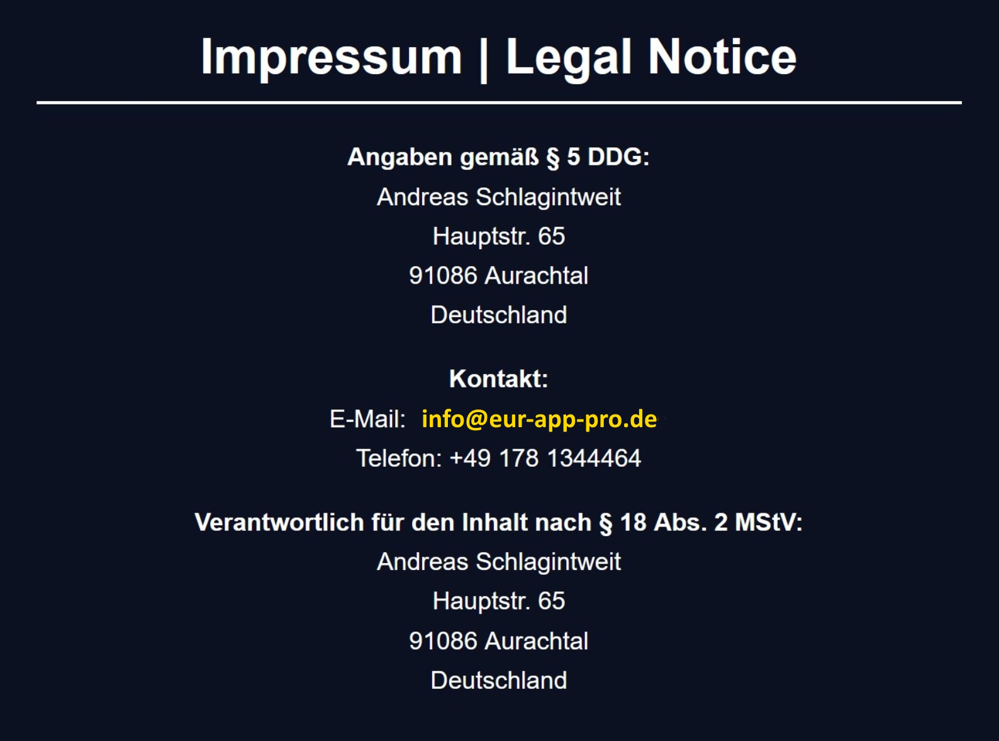

Die Inhalte dieser Website wurden mit größter Sorgfalt erstellt. Für die Richtigkeit, Vollständigkeit und Aktualität der Inhalte übernehmen wir keine Gewähr.
Die EÜR-App Pro ist ein Hilfsmittel zur Verwaltung von Einnahmen und Ausgaben. Sie ersetzt keine steuerliche oder rechtliche Beratung. Der Anbieter übernimmt keine Haftung für:
Die App ist nach bestem Wissen und Gewissen GoBD-konform gestaltet. Eine rechtssichere GoBD-Zertifizierung durch eine offizielle Stelle besteht nicht. Für die ordnungsgemäße Buchführung ist stets der Nutzer verantwortlich.
Für steuerliche Fragen und die Prüfung Ihrer Buchhaltung empfehlen wir die Beratung durch einen zugelassenen Steuerberater.